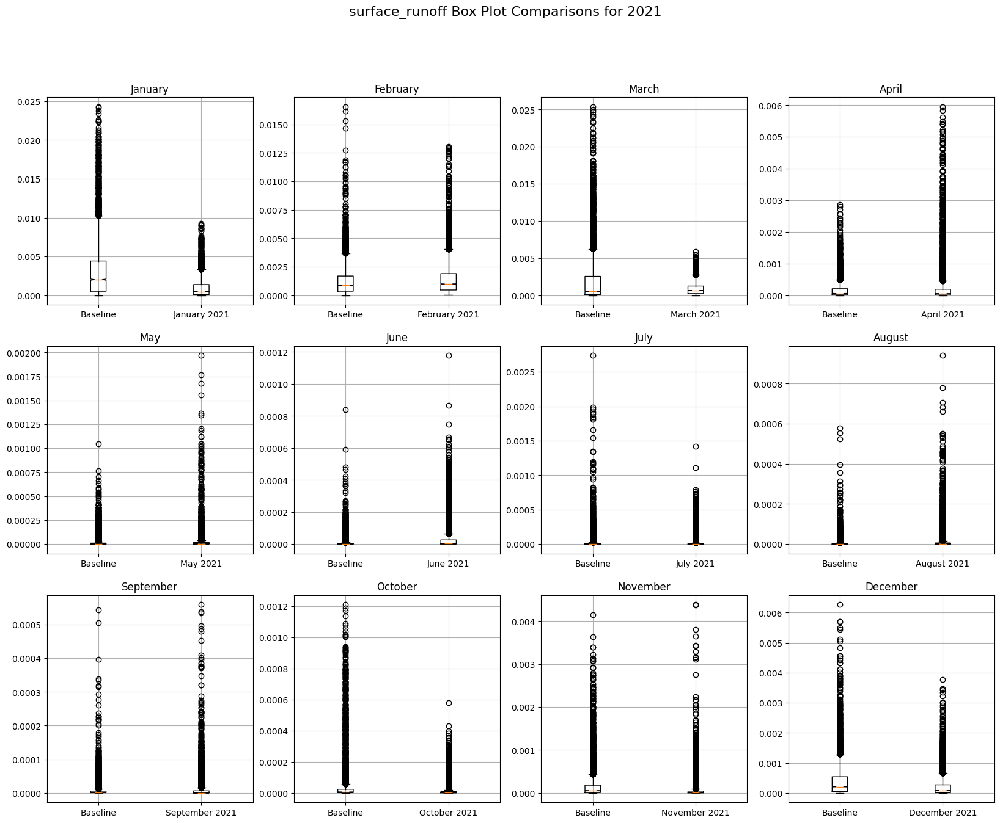
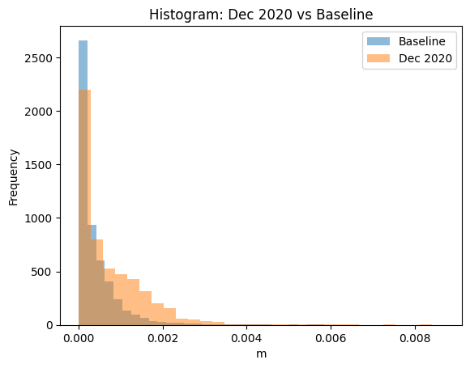

ERA5-Land monthly averaged data from 1950 to present#
https://cds-beta.climate.copernicus.eu/datasets/reanalysis-era5-land-monthly-means?tab=overview
Focus in Madagascar#
'area': [-9.95, 40.23, -26.8, 52.45]
import xarray as xr
import os
import matplotlib.pyplot as plt
import cartopy.crs as ccrs
import cartopy.feature as cfeature
import glob
import numpy as np
from shared import *
import warnings
warnings.filterwarnings("ignore")
param_long_name = 'surface_runoff'
param_short_name = 'sro'
ds = xr.open_mfdataset(['data_0.nc', 'data_1.nc', 'data_2.nc'], chunks={'time': "auto"}, concat_dim="valid_time", combine='nested', parallel=False)
# Resample to monthly data (if necessary)
ds_sorted = ds.sortby('valid_time')
ds_monthly = ds_sorted.resample(valid_time='1ME').first()
ds_monthly['t2m_c'] = ds_monthly['t2m'] - 273.15
ds_monthly['skt_c'] = ds_monthly['skt'] - 273.15
ds_monthly['stl1_c'] = ds_monthly['stl1'] - 273.15
ds_monthly['stl2_c'] = ds_monthly['stl2'] - 273.15
ds_monthly['stl3_c'] = ds_monthly['stl3'] - 273.15
ds_monthly['stl4_c'] = ds_monthly['stl4'] - 273.15
---------------------------------------------------------------------------
KeyError Traceback (most recent call last)
~/drought-311-venv/lib64/python3.11/site-packages/xarray/core/dataset.py in ?(self, name)
1477 variable = self._variables[name]
1478 except KeyError:
-> 1479 _, name, variable = _get_virtual_variable(self._variables, name, self.sizes)
1480
KeyError: 't2m'
During handling of the above exception, another exception occurred:
KeyError Traceback (most recent call last)
~/drought-311-venv/lib64/python3.11/site-packages/xarray/core/dataset.py in ?(self, key)
1576 return self._construct_dataarray(key)
1577 except KeyError as e:
-> 1578 raise KeyError(
1579 f"No variable named {key!r}. Variables on the dataset include {shorten_list_repr(list(self.variables.keys()), max_items=10)}"
~/drought-311-venv/lib64/python3.11/site-packages/xarray/core/dataset.py in ?(self, name)
1477 variable = self._variables[name]
1478 except KeyError:
-> 1479 _, name, variable = _get_virtual_variable(self._variables, name, self.sizes)
1480
~/drought-311-venv/lib64/python3.11/site-packages/xarray/core/dataset.py in ?(variables, key, dim_sizes)
211 split_key = key.split(".", 1)
212 if len(split_key) != 2:
--> 213 raise KeyError(key)
214
KeyError: 't2m'
The above exception was the direct cause of the following exception:
KeyError Traceback (most recent call last)
/tmp/ipykernel_2007498/2383951278.py in ?()
1 # Resample to monthly data (if necessary)
2 ds_sorted = ds.sortby('valid_time')
3 ds_monthly = ds_sorted.resample(valid_time='1ME').first()
----> 4 ds_monthly['t2m_c'] = ds_monthly['t2m'] - 273.15
5 ds_monthly['skt_c'] = ds_monthly['skt'] - 273.15
6 ds_monthly['stl1_c'] = ds_monthly['stl1'] - 273.15
7 ds_monthly['stl2_c'] = ds_monthly['stl2'] - 273.15
~/drought-311-venv/lib64/python3.11/site-packages/xarray/core/dataset.py in ?(self, key)
1574 if utils.hashable(key):
1575 try:
1576 return self._construct_dataarray(key)
1577 except KeyError as e:
-> 1578 raise KeyError(
1579 f"No variable named {key!r}. Variables on the dataset include {shorten_list_repr(list(self.variables.keys()), max_items=10)}"
1580 ) from e
1581
KeyError: "No variable named 't2m'. Variables on the dataset include ['swvl1', 'swvl2', 'swvl3', 'swvl4', 'stl1', ..., 'pev', 'number', 'latitude', 'longitude', 'valid_time']"
visualise_variable_annually(ds_monthly, param_long_name, 2020)
Compare to baseline (1991 to 2023)#
target_year = 2021
monthly_baseline = create_monthly_baseline(ds_monthly, ignore_years=[2019, 2020, 2021, 2022, 2023])
ds_target = ds_monthly.sel(valid_time=ds_monthly['valid_time'].dt.year == target_year)
make_comparisons(ds_target, monthly_baseline, param_long_name, target_year, show_box_plots=True, show_hists=True, show_extremes_plot=True)

var_baseline = monthly_baseline[param_short_name]
ds_2020 = ds_monthly.sel(valid_time=ds_monthly['valid_time'].dt.year == 2020)
var_2020 = ds_2020.groupby('valid_time.month').mean(dim='valid_time')[param_short_name]
var_baseline_flatten = var_baseline.sel(month=12).to_numpy().flatten()
var_2020_flatten = var_2020.sel(month=12).to_numpy().flatten()
valid_data = ~np.isnan(var_baseline_flatten) * ~np.isnan(var_2020_flatten)
var_baseline_flatten_valid = var_baseline_flatten[valid_data]
var_2020_flatten_valid = var_2020_flatten[valid_data]
var_2020_flatten_valid
array([1.7814184e-05, 2.0803729e-05, 1.1968272e-05, ..., 7.1510152e-07,
3.7889407e-07, 3.8355068e-07], dtype=float32)
plt.boxplot([var_baseline_flatten_valid, var_2020_flatten_valid], labels=['Baseline', 'Dec 2020'])
plt.ylabel('m')
plt.title('Distribution: 2020 vs Baseline')
plt.show()
plt.hist(var_baseline_flatten_valid, bins=30, alpha=0.5, label='Baseline')
plt.hist(var_2020_flatten_valid, bins=30, alpha=0.5, label='Dec 2020')
plt.xlabel('m')
plt.ylabel('Frequency')
plt.legend()
plt.title('Histogram: Dec 2020 vs Baseline')
plt.show()

anomaly = (var_2020.sel(month=12) - var_baseline.sel(month=12))
# Plotting the anomaly with NaNs handled automatically
anomaly.plot(x='longitude', y='latitude', cmap='RdBu_r', center=0)
plt.title('Anomaly: Dec 2020 vs Baseline')
plt.show()
# Assuming ds_monthly and monthly_baseline are already defined
# Extract May 2020 and May baseline data
may_2020 = ds_monthly[param_short_name].sel(valid_time='2020-05', method='nearest')
may_baseline = monthly_baseline[param_short_name].sel(month=5)
# Compute the arrays to remove Dask dependency
may_2020_computed = may_2020.compute()
may_baseline_computed = may_baseline.compute()
# Flatten the data to sort and find the top/bottom 2% thresholds
flattened_may_2020 = may_2020_computed.values.flatten()
# Calculate the thresholds for the highest and lowest 2%
high_threshold = np.percentile(flattened_may_2020[np.isfinite(flattened_may_2020)], 98)
low_threshold = np.percentile(flattened_may_2020[np.isfinite(flattened_may_2020)], 2)
# Identify the pixels where the temperature is in the highest 2%
high_2_percent_mask = may_2020_computed >= high_threshold
low_2_percent_mask = may_2020_computed <= low_threshold
# Compute the masks to remove Dask dependency
high_2_percent_mask = high_2_percent_mask.compute()
low_2_percent_mask = low_2_percent_mask.compute()
# Extract the corresponding baseline values for the identified pixels
high_2_percent_baseline = may_baseline_computed.where(high_2_percent_mask, drop=True)
high_2_percent_2020 = may_2020_computed.where(high_2_percent_mask, drop=True)
low_2_percent_baseline = may_baseline_computed.where(low_2_percent_mask, drop=True)
low_2_percent_2020 = may_2020_computed.where(low_2_percent_mask, drop=True)
# Flatten the arrays and remove NaNs for scatter plot comparison
high_baseline_flat = high_2_percent_baseline.values.flatten()
high_2020_flat = high_2_percent_2020.values.flatten()
low_baseline_flat = low_2_percent_baseline.values.flatten()
low_2020_flat = low_2_percent_2020.values.flatten()
# Remove NaN values from both baseline and 2020 data
valid_high = np.isfinite(high_baseline_flat) & np.isfinite(high_2020_flat)
valid_low = np.isfinite(low_baseline_flat) & np.isfinite(low_2020_flat)
high_baseline_flat = high_baseline_flat[valid_high]
high_2020_flat = high_2020_flat[valid_high]
low_baseline_flat = low_baseline_flat[valid_low]
low_2020_flat = low_2020_flat[valid_low]
# Scatter plot for the high 2%
plt.figure(figsize=(10, 5))
plt.subplot(1, 2, 1)
plt.scatter(high_baseline_flat, high_2020_flat, color='red')
plt.plot([min(high_baseline_flat), max(high_baseline_flat)],
[min(high_baseline_flat), max(high_baseline_flat)], 'k--')
plt.xlabel('Baseline May')
plt.ylabel('May 2020')
plt.title('High 2% Pixels: May 2020 vs Baseline')
plt.grid(True)
# Scatter plot for the low 2%
plt.subplot(1, 2, 2)
plt.scatter(low_baseline_flat, low_2020_flat, color='blue')
plt.plot([min(low_baseline_flat), max(low_baseline_flat)],
[min(low_baseline_flat), max(low_baseline_flat)], 'k--')
plt.xlabel('Baseline May')
plt.ylabel('May 2020')
plt.title('Low 2% Pixels: May 2020 vs Baseline')
plt.grid(True)
plt.tight_layout()
plt.show()